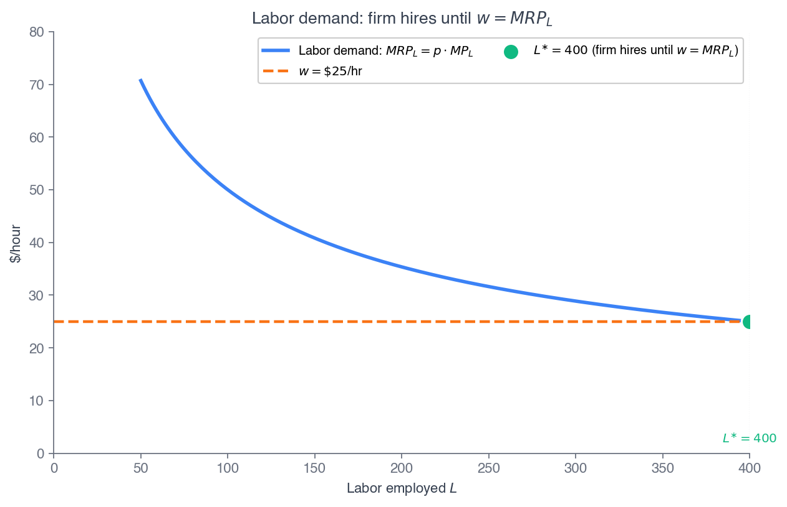
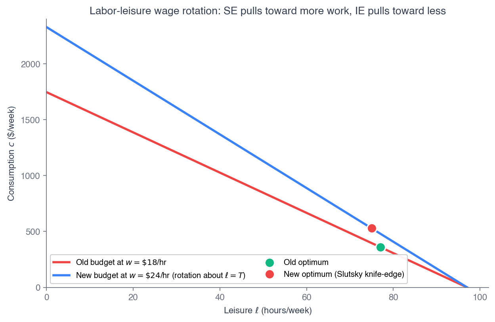
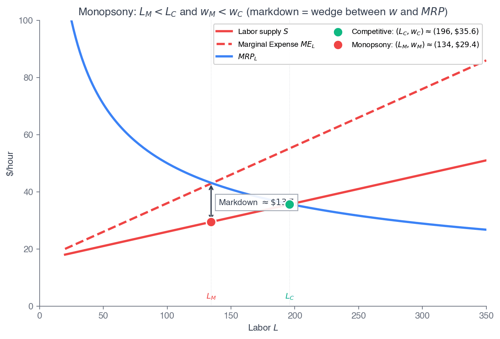
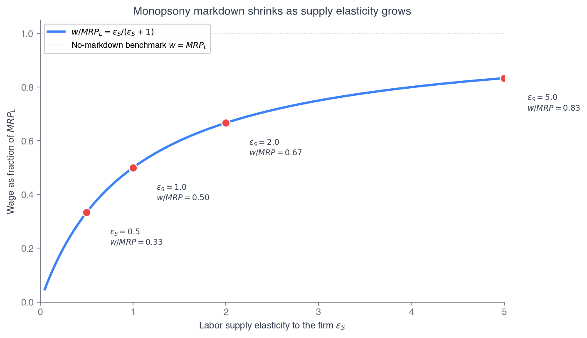
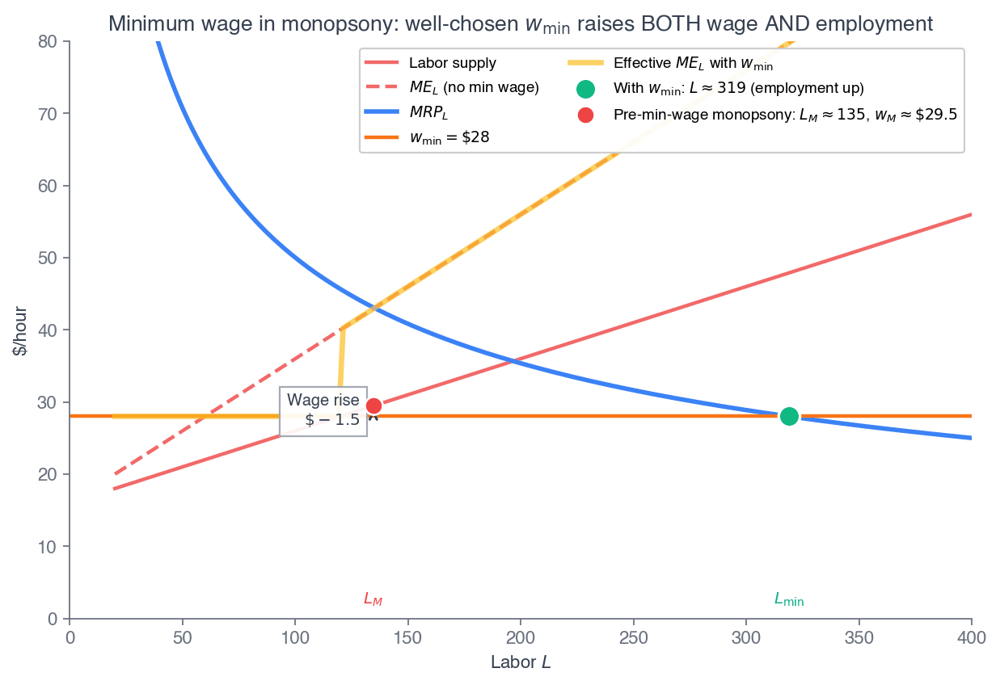
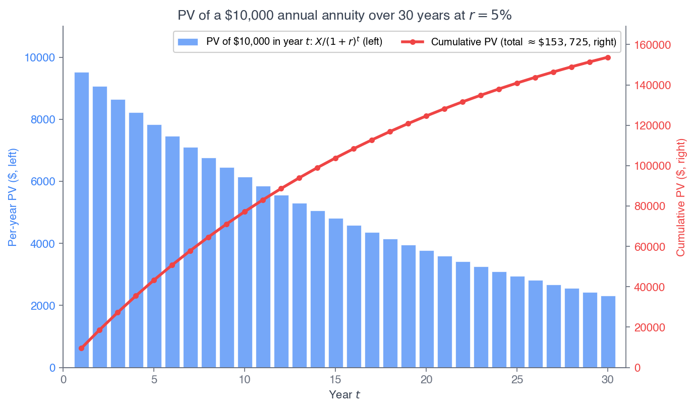
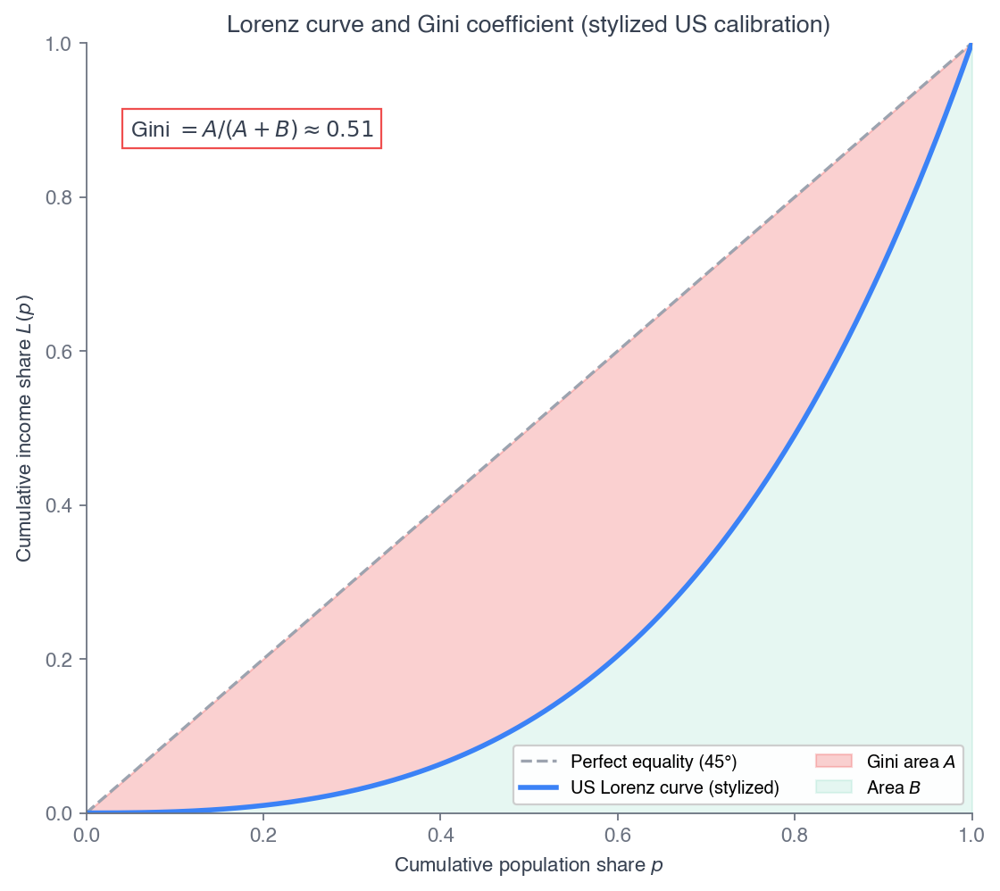

Click anywhere (or press Esc) to close
ECON 2316 • Microeconomic Theory • Chapter 19
Maya returns after 14 chapters with two job offers — both paying $24/hour. The whole book is the machinery that tells them apart.
Dr. Richeng Piao
Department of Economics
Northeastern University — Closes the Manuscript
By the end of class today, you will be able to…
1
Derive the firm's labor demand as derived demand: \(w = VMP_L = p\cdot MP_L\) under perfect competition. (Bloom L4)
2
Distinguish \(MRP_L\) from \(VMP_L\) and show why a monopolist hires fewer workers at every wage. (Bloom L4)
3
Decompose a wage change into substitution and income effects, and explain forward- vs backward-bending labor supply. (Bloom L4)
4
Model monopsony and derive the wage-markdown formula \(w/MRP_L = \varepsilon_S/(\varepsilon_S+1)\) — the mirror of the Lerner rule. (Bloom L5)
5
Analyze economic rent on inelastic factors and measure inequality with the Lorenz curve and Gini coefficient. (Bloom L4)
Chapters 4–18 — the toolkit
Chapter 19 — the synthesis
Factor markets are where the whole book converges. A wage is a price, and a price is set by demand (the firm's \(MRP_L\), from producer theory) meeting supply (the worker's labor-leisure tradeoff, from consumer theory) inside a market structure (competitive or monopsonistic, from Part IV). Today we assemble all three.
Maya graduated last May. You've followed her since Ch 4 (preferences), Ch 5 (the time budget \(s+h+\ell=97\)), and Ch 6 (the Slutsky decomposition on a $18→$24/hour raise). Now she has two offers — both paying $24/hour.
Offer A — teaching. Dozens of competing school districts bid for teachers. Competition forces the wage to the marginal value of her labor: \(w = MRP_L\). (§19.1)
Offer B — tech. One dominant employer in her specialization. Moving is costly; the firm faces an upward-sloping supply curve and sets the wage below \(MRP_L\) — a wage markdown, the mirror of monopoly's markup. (§19.4)
$24
Offer A wage (= \(MRP_L\))
$24
Offer B wage (< \(MRP_L\))
PC
teaching: many buyers
Monopsony
tech: one buyer
Same headline wage. Different market structure on the buyer side. By the end of class, Maya will compute the markdown her tech employer extracts — and so will you. The closing motif resolves it: a $4.80/hour markdown, about $9,600/year.
§19.1
Why a firm wants labor — and why \(w = p\cdot MP_L\)
A chip fab doesn't want engineers for their own sake — it wants them because they produce chips that customers want. Labor demand is derived from output demand.
Short run: capital fixed at \(\bar K\), so the firm chooses only \(L\):
\[ \pi(L) = p\, f(L,\bar K) - wL - r\bar K \]
FOC: \(\dfrac{d\pi}{dL}=0 \;\Rightarrow\; p\cdot MP_L = w\)
Value of marginal product
\[ VMP_L \equiv p\cdot MP_L = p\,\frac{\partial f}{\partial L} \]
The PC firm's rule: hire until the wage equals the value of the marginal worker's output, \(w = VMP_L\).
Derived, because \(VMP_L\) depends on the output price \(p\) (from output demand) and the production function \(f\) (technology). Shifts in either propagate to labor demand.
Diminishing returns (\(MP_L\) falling, from Ch 7) makes \(VMP_L\) slope downward in \(L\) — so the labor-demand curve \(L^d(w)\) slopes downward in \(w\). The sharper \(MP_L\) falls, the steeper (less elastic) labor demand.
Problem. A chip firm has \(q = 100\sqrt{L}\), sells at \(p=\$10\), pays \(w=\$50\)/hour. Find \(L^*\), the accounting, and the new \(L^*\) if \(w\) falls to $40.
1. Set up. \(MP_L = 50L^{-1/2}\), so \(VMP_L = p\cdot MP_L = 500L^{-1/2}\).
2. Solve \(VMP_L=w\): \(500L^{-1/2}=50 \Rightarrow L^{1/2}=10 \Rightarrow L^*=100\) hours.
3. Accounting. \(q^*=1000\) chips; revenue $10,000; labor cost $5,000; gross margin $5,000.
| Wage \(w\) | \(L^* = (500/w)^2\) |
|---|---|
| $50 | 100 hrs |
| $40 | 156.25 hrs |
4. Comparative static. \(w:50\to40\) raises \(L^*\) by 56.25%. Since \(L\propto w^{-2}\), the labor-demand elasticity is \(-2\) — the square-root production function's signature (\(-1/(1-\alpha)\) for \(q=AL^\alpha\)).
The NBA caps each team's payroll near $165M (2025–26), yet teams pay max-contract stars enormous sums. Why? Derived demand.
A franchise's revenue — tickets, merchandise, broadcasts, suites — scales with wins, and a superstar adds wins. If LeBron adds 10–15 wins at ~$3–$5M revenue each, his marginal revenue product runs $30–$75M/season — while the max-contract rule caps his wage near $50M.
$30–75M
estimated \(MRP\)/season
~$50M
max-contract wage
Even at the cap, the team captures much of his \(MRP\) as franchise rent. The cap blocks direct bidding, but the \(MRP\) logic still drives the wage — and the buyer-side angle returns in §19.4.
§19.2
Why a monopolist hires fewer workers than a competitive firm
\[ MRP_L \equiv \frac{dR}{dL} = MR\cdot MP_L \]

Heads Up 19.1 — derived demand depends on output-market structure
A monopolist hires fewer workers than a PC firm with the same production function and wage — before any buyer-side power. When critics say "monopoly is bad for workers," the \(MRP_L < VMP_L\) wedge is the formal microfoundation: output-market power alone shrinks labor demand at every wage.
Revenue \(R(L) = p(q)\cdot q\) with \(q=f(L)\). Profit \(\pi(L) = R(L) - wL - r\bar K\).
FOC: \(\dfrac{d\pi}{dL}=\dfrac{dR}{dL}-w=0 \Rightarrow \dfrac{dR}{dL}=w\)
Chain rule: \(\dfrac{dR}{dL}=\dfrac{dR}{dq}\cdot\dfrac{dq}{dL}=MR\cdot MP_L\)
So the labor-demand condition is \(MRP_L = w\).
The clean punchline
Under perfect competition \(MR=p\), so \(MRP_L = VMP_L\). Under monopoly \(MR = p + (dp/dq)q < p\), so \(MRP_L < VMP_L\) — and the gap IS the labor-market consequence of monopoly power.
Same FOC, two market structures, two answers. The wedge between \(MRP_L\) and \(VMP_L\) is what reduces employment, output, and consumer surplus simultaneously.
Problem. \(q=100\sqrt{L}\), \(w=\$50\), monopolist facing \(p(q)=25-0.005q\). Find \(MRP_L(L)\), the monopolist's \(L^{mon}\), and compare to the PC industry.
1. \(MR=25-0.01q\); with \(q=100\sqrt L\): \(MR=25-\sqrt L\). So \(MRP_L=(25-\sqrt L)\,50L^{-1/2}=1250L^{-1/2}-50\).
2. Set \(MRP_L=50\): \(1250L^{-1/2}=100 \Rightarrow L^{mon}=156.25\). Then \(q^{mon}=1250\), \(p^{mon}=\$18.75\).
3. PC industry (same technology, full market demand): \(L^{PC}=277.78\), \(q^{PC}=1667\), \(p^{PC}=\$16.67\).
| Monopoly | PC | |
|---|---|---|
| Labor \(L\) | 156.25 | 277.78 |
| Output \(q\) | 1250 | 1667 |
| Price \(p\) | $18.75 | $16.67 |
4. The monopolist hires 44% less labor, produces 25% less output, and charges a 12.5% higher price. The \(MRP_L\)–\(VMP_L\) wedge is why monopoly cuts employment, output, and CS at once — the labor mirror of the Ch 11 markup.
1116 §14.1 — The Demand for Labor
Introduced labor demand as derived demand and developed marginal revenue product graphically — the NBA-vs-NFL pay differential was the canonical case. This chapter makes it the formal \(MRP_L = MR\cdot MP_L\) condition of §§19.1–19.2.
1116 §14.2 — The Supply of Labor
Introduced the labor-leisure tradeoff and previewed the backward-bending supply curve — some workers, given a high enough wage, choose less work. §19.3 makes it the formal Slutsky decomposition, with Maya as the example.
The 1116→2316 jump: Principles gave the graphical intuition (MRP curve, backward-bending shape); this chapter gives the calculus that generates them — the profit-max FOC for demand, the Slutsky equation for supply.
§19.3
Why a raise can make you work less — Maya returns
A worker splits time \(T\) between leisure \(H\) and labor \(L=T-H\). The wage \(w\) is the price of leisure. Maximize \(u(c,H)\) s.t. \(c+wH = wT + m_0\).
\[ \frac{\partial L^M}{\partial w} = \underbrace{-\frac{\partial H^H}{\partial w}}_{\text{sub effect} \,>\,0} \;-\; L\cdot\underbrace{\frac{\partial H^M}{\partial m_0}}_{\text{income effect} \,<\,0 \text{ if leisure normal}} \]

The total Marshallian effect is the sum. Sub > income → labor supply slopes up (typical for low-to-moderate earners). Income > sub → supply bends backward (high earners with strong leisure preference).
Full-income budget: \(c + wH = wT + m_0\). The wage acts as both the price of leisure and an income shifter — the defining feature.
\[ \frac{\partial H^M}{\partial w} = \underbrace{\frac{\partial H^H}{\partial w}}_{<\,0} + (T-H)\underbrace{\frac{\partial H^M}{\partial m_0}}_{>\,0 \text{ if normal}} \]
The factor \((T-H)=L\) reflects that the worker is a net supplier of time: a wage rise raises income in proportion to hours worked.
The sign is an empirical question
The Marshallian wage-elasticity of labor supply can be positive (forward-bending) or negative (backward-bending) depending on which channel dominates. The decomposition makes visible what the Marshallian curve hides.
Maya's W6.2 result is the knife-edge case: under Cobb-Douglas-log preferences the two channels cancel exactly, so labor supply doesn't move — even though both effects are large.
Problem. Maya: \(U=60g(s)+96\ln(wh)+732\ln\ell\), \(s+h+\ell=97\), baseline \((28,8,61)\) at \(w=\$18\). Wage rises to \(w'=\$24\). Decompose the change in labor supply \(h\).
1. Recast as Cobb-Douglas-log over \((c,\ell)\), weights \((96,732)\), budget \(c+w\ell=69w\). Marshallian: \(\ell^M=61\) (constant in \(w\)!), \(h^M = c^M/w = 8\) at both wages.
2. Total Marshallian \(\Delta h^M = 0\). Hicksian at \(\bar u=3486.26\): \(c^H=185.78\), \(\ell^H=59.00\), \(h^H=9.9989\).
3. Sub effect: \(h^H-h^M_{18}=+2.00\). Income effect: \(h^M_{24}-h^H=-2.00\).
| Channel | \(\Delta h\) (hrs/wk) |
|---|---|
| Substitution | +2.00 |
| Income | −2.00 |
| Total (Marshallian) | 0.00 |
4. The cancellation is the lesson. Maya sits exactly on the knife edge between forward- and backward-bending supply. The Slutsky machinery is what makes both non-trivial channels visible even when the Marshallian elasticity is zero.
Maya's wage rose from $18 to $24/hour, yet her labor supply stayed at exactly 8 hours. In the Slutsky framework, what is the core mechanism?
45 sec to vote
Both channels are large — \(+2.00\) hours from substitution, \(-2.00\) from income — and Cobb-Douglas-log makes them cancel exactly. Maya sits on the boundary between forward- and backward-bending supply.
Trap A: "nothing happened" misreads the result. A great deal happened — two offsetting forces of two hours each. The Marshallian curve hides what Slutsky reveals.
Problem. Give leisure stronger curvature than log: sub-utility \(96\ln(wh) + 1500\,\ell^{0.6}\), \(h+\ell=69\). Compute \(h^M\) at \(w\in\{18,24,36\}\). Does supply bend backward?
1. FOCs give \(0.10667\,\ell^{0.4}+\ell = 69\) — solve numerically for each \(w\) (Newton).
2. Leisure \(\ell^M\) rises with the wage, so labor \(h^M = 69-\ell^M\) falls.
3. The income effect (leisure income-elasticity \(\approx +1.05\)) exceeds the substitution effect at these wages.
| Wage \(w\) | \(\ell^M\) | \(h^M=69-\ell^M\) |
|---|---|---|
| $18 | 65.50 | 3.50 |
| $24 | 65.65 | 3.35 |
| $36 | 65.79 | 3.21 |
4. Backward-bending. Labor falls \(3.50\to3.35\to3.21\) as \(w\) rises. Documented for high-income professionals (lawyers cutting hours past a threshold), near-retirees, and target-earners — not the typical low-to-moderate wage worker.
Camerer, Babcock, Loewenstein & Thaler (1997 QJE) found NYC drivers worked fewer hours on high-wage days — the opposite of the neoclassical prediction — reading it as daily target-earning (~$200/day, hit faster on good days).
Farber (2015 QJE), with far larger electronic trip records, found stopping depends mainly on cumulative hours and that drivers do extend hours on good days — the neoclassical substitution effect dominates for experienced drivers.
Heads Up 19.2 — the shape depends on income > vs sub >
A backward-bending curve requires the income effect to exceed the substitution effect — from either (a) strong leisure curvature, or (b) reference-dependent target-earning (Ch 18). Most workers do not face a backward-bending curve over the wage range they actually experience; it's documented for high-income professionals and target-earners.
The lesson. Backward-bending supply can come from the income->-sub algebra of W19.5 or reference-dependent target-earning (W18.2). The empirical shape depends on the population, the institutional setting, and the data quality.
§19.4
Monopoly's mirror image — on the buyer side of the labor market
A monopsonist is the only (or dominant) buyer of a kind of labor, facing an upward-sloping supply \(w(L)\). To hire one more worker it must raise the wage — and pay it to all inframarginal workers too:
\[ MFC(L) = w(L) + L\cdot w'(L) > w(L) \]
The FOC is \(MRP_L = MFC\), not \(MRP_L = w\). This gives lower employment and lower wages than the competitive case at the same supply schedule.

The name is Joan Robinson's (1933). Think of a meatpacking plant in a small town, or Maya's tech firm as the dominant employer of her specialization — any employer in a low-density labor market with high job-search costs.
FOC \(MRP_L = w + Lw'(L) = MFC\). With supply elasticity \(\varepsilon_S = (dL/dw)(w/L)\), we get \(Lw'(L)=w/\varepsilon_S\), so \(MFC = w(1+1/\varepsilon_S)\):
\[ \boxed{\;\frac{w}{MRP_L} = \frac{\varepsilon_S}{\varepsilon_S+1}\;} \]
The share of marginal product workers capture — strictly \(<1\) whenever supply is not perfectly elastic. The smaller \(\varepsilon_S\), the larger the markdown.

The Lerner mirror
Monopoly: \(p/MC = \varepsilon_D/(\varepsilon_D+1) > 1\) (markup, since \(\varepsilon_D<0\)). Monopsony: \(w/MRP_L = \varepsilon_S/(\varepsilon_S+1) < 1\) (markdown, since \(\varepsilon_S>0\)). Same algebra, opposite sign on the elasticity. Examples: \(\varepsilon_S=1\to0.5\); \(\varepsilon_S=2\to0.67\); \(\varepsilon_S=5\to0.83\) (Maya's tech firm); \(\varepsilon_S=\infty\to1\) (PC, no markdown).
Problem. Tech firm: supply \(w(L)=16+0.05L\), \(q=100\sqrt L\), \(p=\$10\). So \(MRP_L=500L^{-1/2}\), \(MFC=16+0.1L\). Find \(L^{mon},w^{mon}\), the markdown, and the PC counterfactual.
1. \(MRP_L=MFC\): \(500L^{-1/2}=16+0.1L\). Solve numerically \(\Rightarrow L^{mon}\approx196\).
2. \(w^{mon}=16+0.05(196)=$25.80\); \(MRP_L(196)=$35.71\).
3. Markdown: \(w/MRP_L = 25.80/35.71 = 0.72\). Implied \(\varepsilon_S=2.63\); check \(2.63/3.63=0.72\) ✓.
| Monopsony | PC | |
|---|---|---|
| Labor \(L\) | 196 | 280 |
| Wage \(w\) | $25.80 | $30.00 |
4. Lower employment AND lower wages. Workers capture only 72% of their marginal product; the firm extracts the rest as monopsony rent (~$823/period on inframarginal workers, ~$176/period deadweight loss).
\(MRP_L = 500L^{-1/2}\) (blue), supply \(w(L)=a+bL\) (green), \(MFC=a+2bL\) (orange). Monopsony at \(MRP_L=MFC\); PC at \(MRP_L=\)supply. Set \(w_{\min}>w^{mon}\) to see the welfare reversal.
Problem. Continue W19.6. The state sets \(w_{\min}=\$28\). Find the new \(L^*\) and compare to monopsony (196) and PC (280).
1. Below the floor, \(MFC = w_{\min}=28\) (a flat line) — adding a worker no longer requires raising the wage. FOC: \(MRP_L = 28\).
2. Supply at \(w_{\min}=28\) is \(L=(28-16)/0.05=240\). At \(L=240\), \(MRP_L=32.28>28\) — the firm wants more, but supply runs out. So \(L^*=240\).
3. Both employment AND wages rise vs monopsony: \(L\!:196\to240\), \(w\!:25.80\to28\).

4. The welfare reversal. A well-chosen minimum wage raises employment, raises wages, and improves total welfare (~+$130/period vs monopsony) — the opposite of the PC prediction.
Empirical studies repeatedly find little or no employment loss from real-world minimum-wage hikes. What is the cleanest theoretical explanation?
45 sec to vote
When supply to the firm is inelastic (low \(\varepsilon_S\)), a floor between the monopsony and competitive wages flattens the effective \(MFC\) and lets the firm hire more. The California $20 fast-food evidence fits this reading.
Trap A: the data aren't flawed — the basic model was wrong for these markets. Assuming perfect competition (high \(\varepsilon_S\)) is the wrong baseline for many low-wage labor markets.
AB 1228 (Apr 1, 2024): $20/hour for fast-food chains with 60+ locations — the largest sectoral minimum-wage shock in US history (~69% of CA median wage).
Reich–Sosinskiy 2026 (Berkeley): wages +11–12%, prices +1.5–2.1%, no employment loss.
Clemens–Edwards–Meer 2025 (Cato): employment −2.7% (−3.2% trend-corrected, ~18,000 jobs).
Both credentialed teams, same QCEW data — the dispute is over how to build the counterfactual. Teach as a live methodological debate.
Theory & Data 19.1 — Yeh–Macaluso–Hershbein 2022
US manufacturing markdown \(MRP_L/w\approx1.53\) — workers capture only ~$0.65 on the marginal dollar, implying \(\varepsilon_S\approx1.86\). Azar et al. 2020: avg labor-market HHI 4,378, 60% highly concentrated. Prager–Schmitt 2021: hospital mergers cut nurse wage growth −4 to −6 pp.
Heads Up 19.3 — the sign flips from PC
In PC (high \(\varepsilon_S\)): a binding floor cuts employment + creates DWL. In monopsony (low \(\varepsilon_S\), markdown): a floor between \(w^{mon}\) and \(w^{PC}\) raises employment and wages. The operative question is always \(\varepsilon_S\).
§19.5
When supply can't respond, all payment is rent
Capital: firms rent at \(r\) (the user cost: interest + depreciation − appreciation). Invest if \(\sum_{t=1}^{T} X_t/(1+r)^t \geq I\).
Land: supply is nearly perfectly inelastic. When supply can't respond, the price is entirely demand-determined — and any payment above opportunity cost is pure economic rent.
Recall from 1116 — §15.1
Ricardo's "three settlers": more fertile land commands more rent. The insight scales — any factor with a binding supply constraint earns rent, not just dirt.

Henry George (1879): taxing land rent generates zero deadweight loss — supply can't withhold in response to the tax. The perennial appeal (and perennial political failure) of land-value taxation.
Problem. Loudoun County grid capacity is fixed at \(\bar L=2{,}500\) MW. Demand \(D(\rho)=5{,}000-12.5\rho\) ($/kW/mo). Find \(\rho^*\); the rent if AI demand doubles; the effect of a 50% land tax.
1. \(5000-12.5\rho=2500 \Rightarrow \rho^*=\$200\)/kW/mo (≈$195 empirically, CBRE Q1 2026). Total rent \(=\$500\)M/month \(\approx\$6\)B/year.
2. Demand doubles (\(D'=10{,}000-12.5\rho\)): \(\rho^{*\prime}=\$600\)/kW/mo. Rent triples on a doubling of demand — purely Ricardian, because supply can't respond.
3. 50% land tax: revenue $250M/month; quantity unchanged at 2,500 MW; DWL = 0.
Heads Up 19.5 — economic rent is not just land
Rent appears wherever supply has a binding constraint: OPEC oil rents, Sherwin Rosen "superstar" performer rents (LeBron vs his next-best alternative), patent rents, firm-specific human-capital rents (the Prager–Schmitt nurse case). Taxing rent without distorting quantity is the holy grail of public finance.
4. Detroit's proposed Land Value Tax (Duggan, 2023–24) would cut building mills and raise land mills — the modern Henry George revival, still a proposal.
§19.6
The Lorenz curve and the Gini coefficient
The Lorenz curve \(L(p)\) = the income share of the bottom \(p\) fraction of households. Perfect equality: \(L(p)=p\) (the 45° line). Real distributions bow below it.
\[ G = 2\int_0^1 \big(p - L(p)\big)\,dp \;\in\;[0,1] \]
\(G=0\): perfect equality. \(G=1\): one household has everything. The Gini is twice the area between the 45° line and the Lorenz curve.

Factor markets together determine the distribution of national income — wages, capital income, and land rent aggregate up to household incomes. The Lorenz/Gini apparatus is how we summarize the result in one number.
Problem. US 2023 quintile income shares: 3.1 / 8.5 / 14.4 / 22.1 / 52.0 (%). Compute the Lorenz points and the trapezoidal Gini.
1. Lorenz: \(L=\{0.031,\,0.116,\,0.260,\,0.481,\,1.000\}\) at \(p=0.2,0.4,0.6,0.8,1.0\).
2. Area under Lorenz (trapezoids) \(=0.27760\). Area between \(=0.5-0.27760=0.22240\).
3. \(G\approx 2(0.22240)=0.445\) vs official Census 0.488 — the trapezoid underestimates by ~0.04 (5-bin linear interpolation misses the top-tail curvature).
Heads Up 19.4 — notation + the inequality debate
Notation: \(L(p)\) is the Lorenz function here, not labor input \(L\). Debate: top-1% pre-tax share is ~20% (Piketty–Saez–Zucman 2018) vs ~14% (Auten–Splinter 2024) — same data, different allocation of unobserved income. Both peer-reviewed; present both, pick neither.
4. Gini is sensitive to what's measured: pre-tax money income 0.488; post-tax-and-transfer ~0.39; wealth Gini ~0.85. The US sits at the upper end of OECD inequality.
Acemoglu–Restrepo (2022 Econometrica): automation accounts for 50–70% of the rise in US wage inequality 1980–2016. Generative AI is the latest wave.
Brynjolfsson–Li–Raymond (2023): an AI assistant raised customer-service productivity +14% on average but +34% for novices — AI captures top performers' tacit knowledge and compresses the distribution. Eloundou et al.: ~80% of workers have ≥10% of tasks affected.
+34%
novice productivity gain
~0.71%
10-yr TFP gain (Acemoglu 2025)
What to teach. AI is so far a productivity-augmentation technology with documented novice gains; it has not yet produced displacement comparable to the 1980–2016 record. Augmentation (compressing inequality) vs displacement (widening it) is a live empirical question.
1. Derived demand. Labor demand comes from output max: \(w = VMP_L = p\cdot MP_L\) under perfect competition.
2. The monopoly wedge. \(MRP_L = MR\cdot MP_L < VMP_L\) — output-market power shrinks labor demand at every wage.
3. Labor supply. Slutsky on the price of leisure — sub vs income → forward- or backward-bending. Maya's knife edge.
4. Monopsony. \(w/MRP_L = \varepsilon_S/(\varepsilon_S+1)\) — the Lerner mirror. A minimum wage can raise employment.
5. Economic rent. Payment above opportunity cost; inelastic supply → all rent → land tax has zero DWL.
6. Inequality. Lorenz curve + Gini (US 0.488); sensitive to measure; the PSZ vs Auten–Splinter debate is unresolved.
Both employers offer \(w=\$24\)/hour. Teaching: competitive districts force \(w = MRP_L = \$24\). The tech firm is the dominant buyer; her specialized labor pool has firm-level elasticity \(\varepsilon_S = 5\).
\[ \frac{w}{MRP_L} = \frac{\varepsilon_S}{\varepsilon_S+1} = \frac{5}{6} \;\Rightarrow\; MRP_L^{tech} = 24\cdot\tfrac{6}{5} = \$28.80 \]
Maya is worth $28.80/hour but is paid $24 — the firm extracts $4.80/hour as monopsony rent. At 40 hrs/wk × 50 wks: $9,600/year.
$24.00
wage paid (both)
$28.80
tech \(MRP_L\)
$4.80
markdown per hour
$9,600
monopsony rent / year
Same headline wage. Same nominal income. Different economic interpretation entirely — and now Maya can see it.
End of Chapter 19 • End of the Manuscript
Factor markets stitched the whole book together — consumer theory (supply), producer theory (demand), and market structure (the markdown). Maya's choice is yours to interpret.